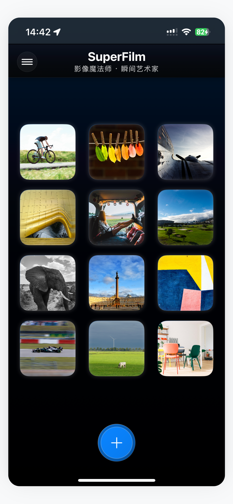
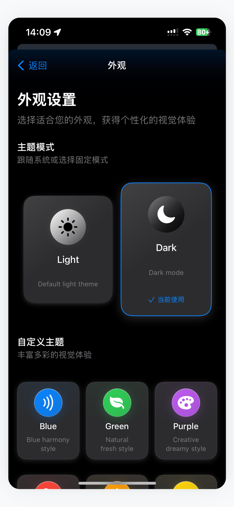
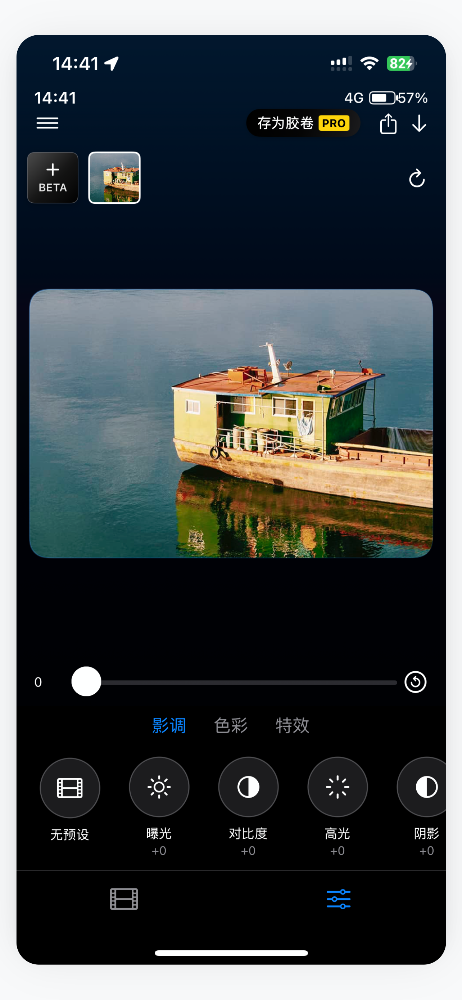
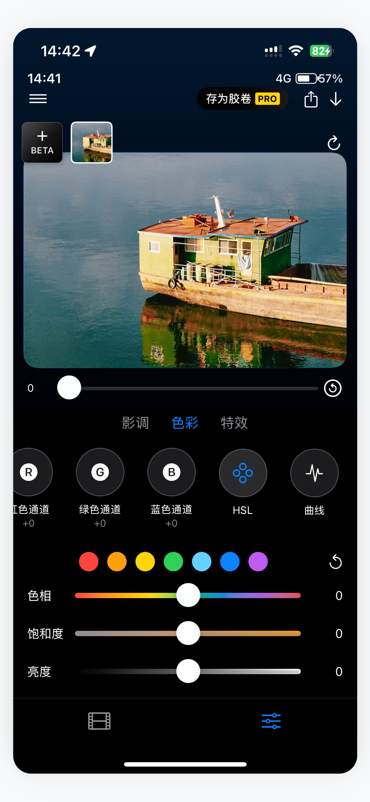
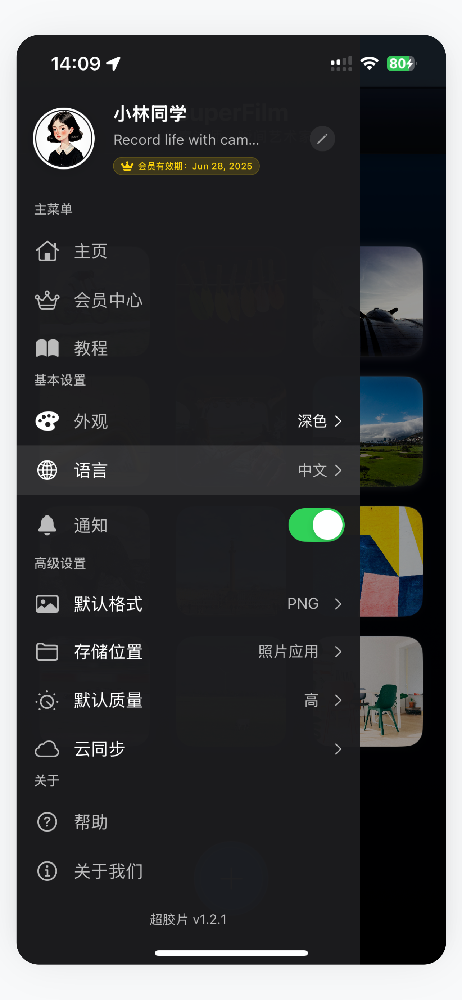
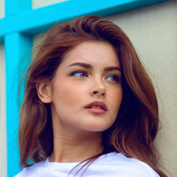

应用展示





关于SuperFilm
「SuperFilm」是一款专业级照片滤镜应用，为您提供丰富的滤镜效果和编辑工具，让您的照片焕发艺术光彩。无论您是摄影爱好者还是社交媒体达人，「SuperFilm」都能满足您对照片美化的各种需求。
通过简单的操作，您可以为照片添加复古胶片效果、时尚色调、艺术滤镜等多种风格，轻松打造专业级照片效果。「SuperFilm」还支持高级编辑功能，让您对照片进行精细调整，展现个性创意。
核心功能
- 丰富滤镜效果 - 超过100种精心设计的滤镜，涵盖复古、时尚、电影等多种风格
- 专业调色工具 - 精确调整亮度、对比度、饱和度、色调等参数
- 一键美化 - 智能识别照片内容，一键优化照片效果
- 局部调整 - 支持对照片特定区域进行精细编辑
- 文字和贴纸 - 丰富的文字样式和贴纸素材，为照片增添个性元素
- 社交分享 - 一键分享至Instagram、微信、微博等社交平台
- 自定义滤镜 - 创建并保存您的专属滤镜组合
功能特点
专业级照片滤镜，让您的照片焕发艺术光彩
专业滤镜
精心设计的100+种专业级滤镜效果，涵盖复古胶片、现代时尚、电影调色等多种风格，让您的照片瞬间变得与众不同
精确调节
提供专业级的调色工具，支持色彩曲线、HSL选择器、精确白平衡等高级功能，让您对照片进行精细调整，打造完美效果
智能美化
AI智能识别照片内容，自动调整参数，一键优化照片效果，智能补光、提亮暗部、增强细节，实现专业效果
局部编辑
支持蒙版与画笔工具，精确选择照片特定区域进行精细编辑，调整曝光、对比度、色彩等参数，实现更专业的创意效果
社交分享
一键分享至各大社交平台，包括Instagram、微信、微博等，支持自定义水印和分享格式，让您的创意作品轻松获得更多赞赏
滤镜收藏
创建并保存您的专属滤镜组合，包含所有参数调整，快速应用于不同照片，建立个人专属风格库，提高创作效率
用户评价
"SuperFilm的滤镜效果非常专业，一键就能让照片变得非常出色，是我拍照必备的应用。"
李女士
摄影爱好者
"作为一名摄影师，我非常喜欢SuperFilm提供的专业调色工具，让我能够对照片进行精细调整，效果非常棒。"
张先生
专业摄影师
"超爱SuperFilm的复古胶片效果，让我的旅行照片有了特别的感觉，朋友们都很喜欢，强烈推荐！"

王女士
旅行博主